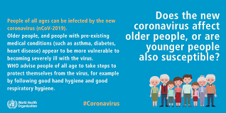

Although by seeing someone, we can't say that he is affected by corona or not but a person who will be suffering will surely show some signs. Some tests confirm the suffering from disease. The disease mainly affects the mpeople of older age as their immunity is low, therefore, immunity is the major factor on which it depends whether the person will get attacked by corona or not. If someone's immune system is healthy then there is more probability that the person will not be affected by corona. Some practices such as yoga and some herbs improve immunity and al about them has been mentioned on the prevention page.
All Symptoms:
Common symptoms include cough, loss of appetite, fatigue, shortness of breath, sputum production, and muscle and joint pains. Symptoms such as nausea, vomiting, and diarrhoea have been observed in varying percentages. Less common symptoms include sneezing, runny nose, sore throat, and skin lesions. Some cases in China initially presented with only chest tightness and palpitations. A decreased sense of smell or disturbances in taste may occur. Loss of smell was a presenting symptom in 30% of confirmed cases in South Korea.
The Major Cause (Fever):
Fever is the most common symptom, although some older people and those with other health problems experience fever later in the disease. In one study, 44% of people had fever when they presented to the hospital, while 89% went on to develop fever at some point during their hospitalization. This shows how much important is fever in determination of the presence of disease. A lack of fever does not verify someone is disease free.
As is common with infections, there is a delay between the moment a person is first infected and the time he or she develops symptoms. This is called the incubation period. The average incubation period for COVID‑19 is five to six days but commonly ranges from 1 to 14 days, with approximately 10% of cases exceeding that time.A minority of cases do not develop noticeable symptoms at any point in time. These asymptomatic carriers tend not to get tested, and their role in transmission is not yet fully known. However, preliminary evidence suggests they may contribute to the spread of the disease.


Complications:
Complications may include pneumonia, Acute Respiratory Distress Syndrome (ARDS), multi-organ failure, septic shock, and death. Cardiovascular complications may include heart failure, arrhythmias, heart inflammation, and blood clots. Approximately 20-30% of people who present with COVID‑19 have elevated liver enzymes reflecting liver injury. Neurologic manifestations include seizure, stroke, encephalitis, and Guillain–Barré syndrome (which includes loss of motor functions). Following the infection, children may develop paediatric multisystem inflammatory syndrome, which has symptoms similar to Kawasaki disease, which can be fatal.
Although the proper cause of this virus is not known and authenticated but many rumours are spread worldwide which may be true or not but this virus is highly transferrable from one person to other and on this page we will discuss about the cause of transmission of virus rather than studying about the origin of the virus. We won't discuss about any of the rumour but rather looking around the world we will see how this started from Wuhan,China and became a pandemic worldwide. How it increases at a so fast paces and from hunderds to thousands and lakhs and goes on increasing.
Transmission:
COVID-19 spreads mainly when people are in close contact (two metres or six feet) via small droplets produced during coughing, sneezing, or talking. Contaminated droplets exhaled by infected people are then inhaled into the lungs, or settle on other people's faces to cause new infection. The droplets are relatively heavy, usually fall to surfaces, and do not travel far through the air. People can transmit the virus without showing symptoms, but it is unclear how often this happens. One estimate of the number of those infected who are asymptomatic is 40%. People are most infectious when they show symptoms (even mild or non-specific symptoms), but may be infectious for up to two days before symptoms appear (pre-symptomatic transmission). They remain infectious an estimated seven to twelve days in moderate cases and an average of two weeks in severe cases.
When the contaminated droplets fall to floors or surfaces they can, though less commonly, remain infectious if people touch contaminated surfaces and then their eyes, nose or mouth with unwashed hands. On surfaces the amount of active virus decreases over time until it can no longer cause infection, and surfaces are thought not to be the main way the virus spreads. It is unknown what amount of virus on surfaces is required to cause infection via this method, but it can be detected for up to four hours on copper, up to one day on cardboard, and up to three days on plastic (polypropylene) and stainless steel (AISI 304). Surfaces are easily decontaminated with household disinfectants which kill the virus outside the human body or on the hands. Disinfectants or bleach are not a treatment for COVID‑19, and cause health problems when not used properly, such as when used inside the human body.
Virology:
Severe Acute Respiratory Syndrome Coronavirus 2 (SARS-CoV-2) is a novel Severe Acute Respiratory Syndrome Coronavirus, first isolated from three people with pneumonia connected to the cluster of acute respiratory illness cases in Wuhan. All features of the novel SARS-CoV-2 virus occur in related coronaviruses in nature. Outside the human body, the virus is killed by household soap, which bursts its protective bubble.
SARS-CoV-2 is closely related to the original SARS-CoV. It is thought to have an animal (zoonotic) origin. Genetic analysis has revealed that the coronavirus genetically clusters with the genus Betacoronavirus, in subgenus Sarbecovirus (lineage B) together with two bat-derived strains. It is 96% identical at the whole genome level to other Bat Coronavirus samples (BatCov RaTG13). In February 2020, Chinese researchers found that there is only one amino acid difference in the binding domain of the S protein between the coronaviruses from pangolins and those from humans; however, whole-genome comparison to date found that at most 92% of genetic material was shared between pangolin coronavirus and SARS-CoV-2, which is insufficient to prove pangolins to be the intermediate host.